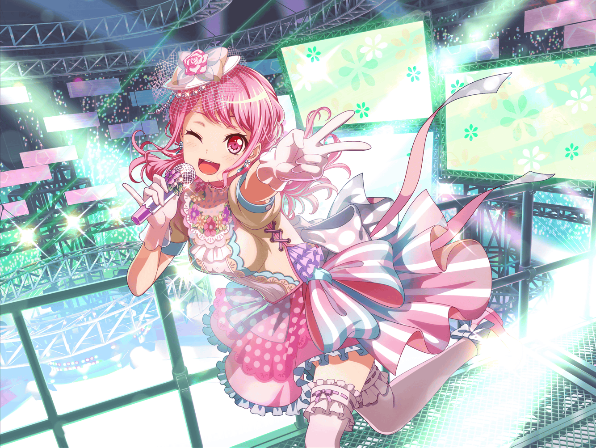

駅前
彩
あっ！ {{userName}}さん！ こんにちは♪
彩
いつもよりご機嫌に見えます？
えへへ、そうなんです♪
彩
この間、ライブがあったんですけど、
苦手だったMCもけっこううまくいったんですよ！
彩
千聖ちゃんにも、褒めてもらえたんですよ！
これって、すごいことかな？ ってじわじわ嬉しく
なってきて……
彩
その時もみんなと話してたんですけど、
パスパレをはじめた頃と比べて、だいぶMCに慣れてきたなーって
彩
それから、とっさのトラブルにも前よりは
対処できるようになってきたって感じがするんです！
彩
きっと、パスパレで色んな事を経験した賜物ですよね！
彩
日菜ちゃんには、『彩ちゃんが成長しちゃったら
つまんない』なんて言われちゃいましたけど……
彩
私は、この成長を自信につなげて
これからも頑張りたいって思ってるんですっ
彩
頑張るところが私のいいところ、ですか？
えへへ、ありがとうございますっ！
イヴちゃんにもそう言ってもらえました！
彩
……あ、電話だ。ちょっと、失礼します
彩
はい、丸山です！ あ、お疲れさまですっ！
……え！？ 撮り直し！？ 今から、ですか……！？
彩
あ、はい……はい……わかりました……
今から向かいます！
彩
{{userName}}さん、どうしよう〜！？
この間撮影したインタビュー動画がNGになっちゃって……
彩
今から撮り直しになっちゃいました〜！
しかも、インタビューの内容も、前のものと変えてほしいって
言われちゃって……
彩
そのインタビューの内容、
事前に喋ることをすっごい考えておいたものだったのに〜！
彩
今からじゃ、パッと喋ること思いつかないよ〜！
彩
{{userName}}さん、
今から一緒に考えてもらえませんか！？
彩
た、助けてください〜！！